Chick Publications
×
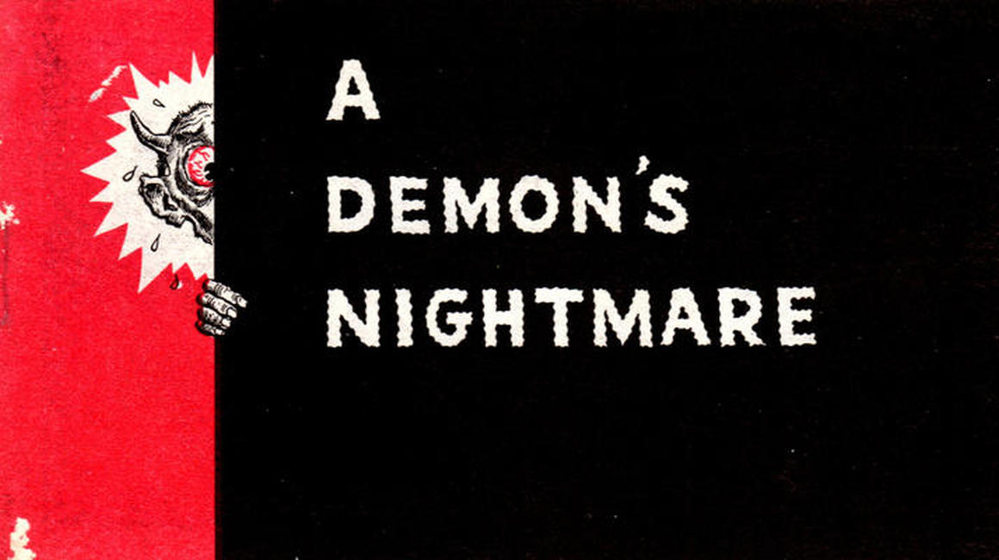
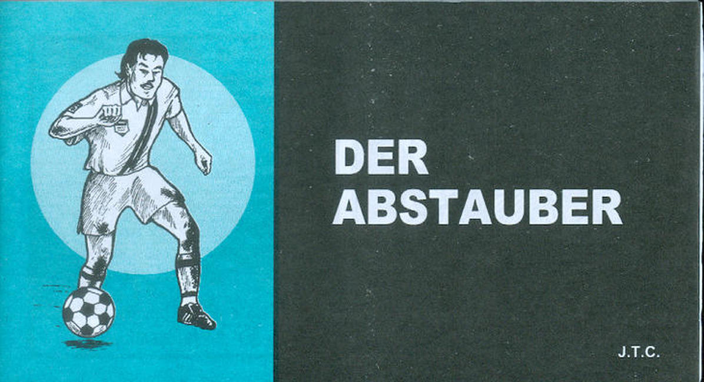
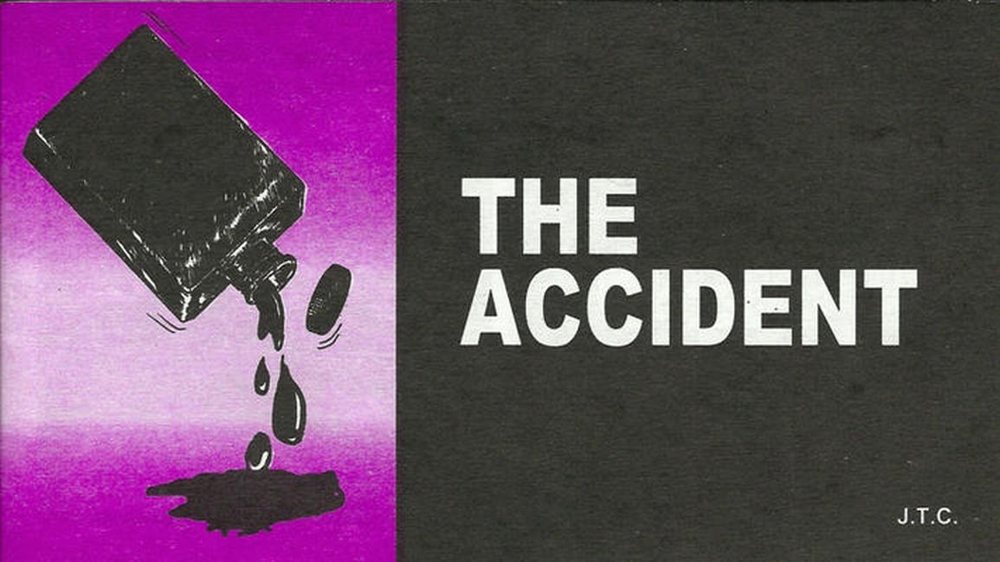
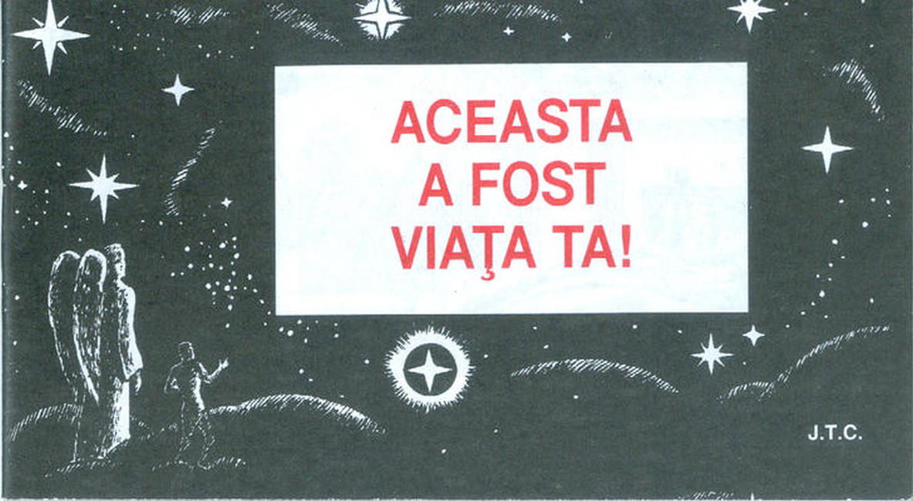
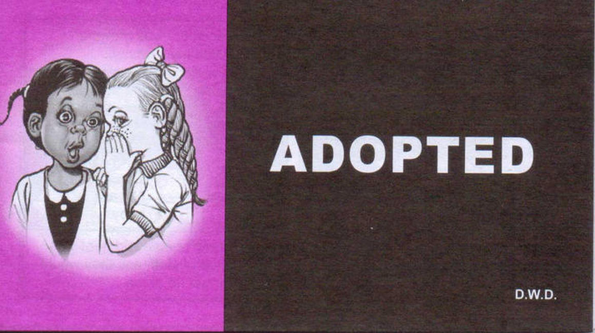
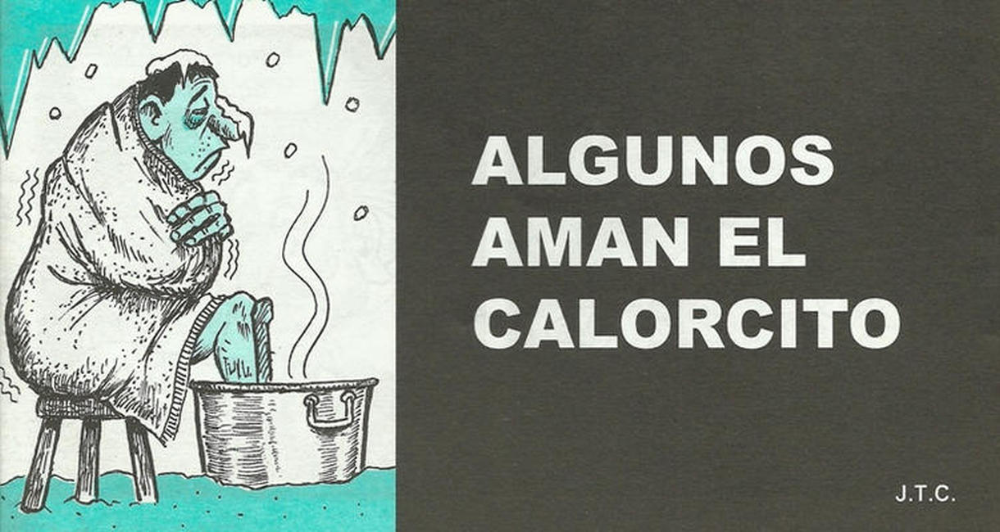
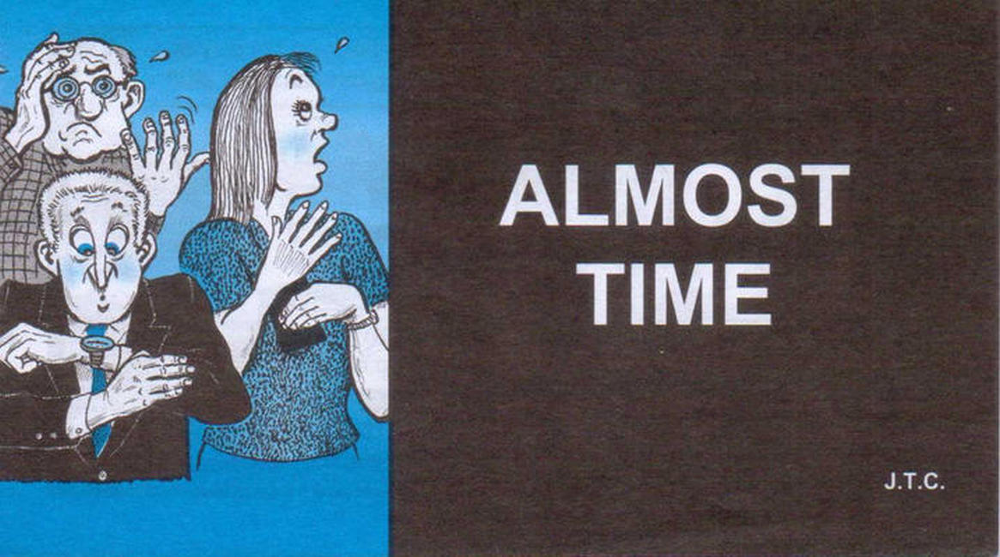
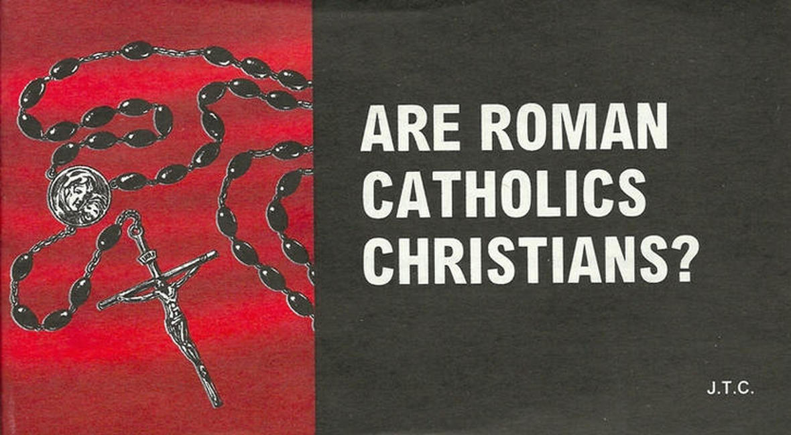
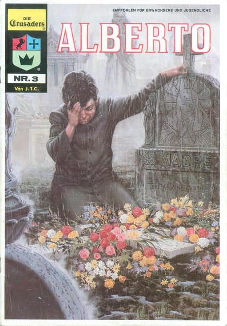
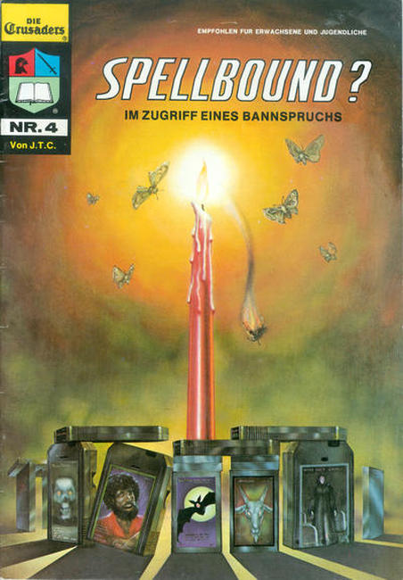
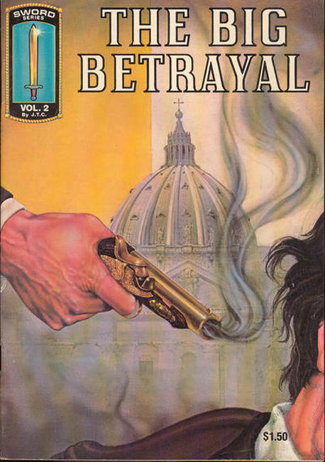
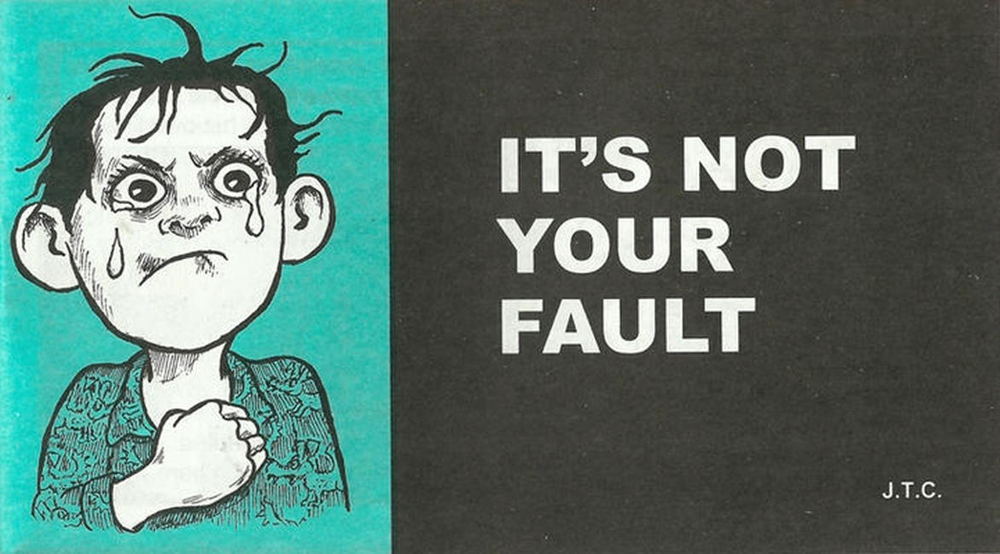
❮
❯
Chick Comics Chick tracts are short evangelical gospel tracts, originally created and published by American publisher and religious cartoonist Jack Chick. Since his death, his company (Chick Publications) has continued to print new tracts using other authors working for the company.
Although many of Chick's tracts express views that are generally accepted within Christian theology, several tracts have expressed controversial viewpoints. Most notably, Chick tracts were known for expressing strongly anti-Catholic views, as well as his criticisms of other faiths including Islam and Mormonism.
The Southern Poverty Law Center has designated Chick Publications as an active hate group.[49] The group was listed due to its strong anti-Catholic, anti-Muslim, and anti-homosexual rhetoric.[50] Chick's views on homosexuality have angered gay activists since his first tract on the subject in 1972 (The Gay Blade tract warned of a gay agenda to push for same sex marriage and urged homosexuals to repent so they could make it into heaven).
Chick's critics (such as talk.origins, Hindu American Foundation, and Catholic Answers) have accused him of misrepresentation.
Titles
A Demon's Nightmare (1974)
Der Abstauber (1999)
The Accident (1999)
Aceasta a fost viaҭa ta! (2002)
Adopted (2017)
Algunos Aman el Calorcito (2009)
Allah "tidak beranak dan diperanakkan" (1999)
Allah Had No Son (1994)
Allah hatte keinen Sohn (1996)
Almost Time (2017)
Alptraum eines Dämons (1980)
And It Was Good! (2015)
Der Anfang (2003)
Angels? (1989)
Apes, Lies and Ms. Henn (2004)
Are Roman Catholics Christians? (1985)
Armes kleines Lamm (2008)
The Assignment (1972)
The Assignment (2004)
The Attack (1985)
Die Attacke (2002)
Aus Erde gemacht (1993)
Die Ausländerin (1993)
The Awful Truth (2011)
Das Babythema (1995)
Back from the Dead? (1982)
Bad Bob! (1999)
Baphomets Fluch (1992)
The Battle (1972)
The Beast (1966)
The Beast (1988)
Het Beest (2008)
Best Friend (1996)
Der beste Freund (1997)
Die Bestimmung (1993)
Die Betrogenen (1991)
Bewitched? (1970)
Bewitched? (1972)
Bewitched? (2000)
The Big Betrayal [Sword Series] (1981)
Big Daddy? (1972)
Birds and the Bees (2004)
Boo! (1991)
Born Wild! (2012)
El Bravucón (2009)
Der Brief (1983)
Bu senin hayatindi! (1990)
Bull (1986)
Bulle (1989)
Bully (2009)
Busted! (1970)
Camel's in the Tent (2012)
Cathy (2013)
Cats (1990)
Caught! (2002)
Chaplain (2005)
Charlie's Ants (1997)
Choice (1999)
Cleo (1995)
Congratulations! (2006)
Contract! (1976)
Crazy Wolf (2009)
Creator or Liar? (1971)
Crisis (1985)
Crusaders (1974)
Die Crusaders (1980)
Dark Dungeons (1984)
Das hat uns ja keiner gesagt! (2004)
Das ist Gesetz! (2002)
Das war dein Leben! (1972)
Das war dein Leben! (2002)
The Death Cookie (1988)
The Deceived (1990)
Dein Papi? (1997)
A Demon's Nightmare (1962)
A Demon's Nightmare (1972)
Der den Himmel erhellte (2003)
The Devil's Night (2004)
Der Dieb (1993)
The Dirty Diamond (2005)
Dit was uw leven! (2004)
Don't Read That Book! (1972)
Doom Town (1999)
The Dreamer (1991)
Der dreckige Diamant (2005)
Du hast eine Verabredung! (2011)
Earthman (1990)
Echt heiss (2004)
Edward, das Ekel (1992)
Edward, das Ekel (2001)
Einer liebt mich! (1980)
Der einzige Ausweg (1992)
Die einzige Hoffnung (1987)
Die einzige Hoffnung (1992)
Die einzige Hoffnung (2005)
The Empty Tomb (1990)
Endlich frei! (2007)
Der Endspurt (1980)
Entführt! (2005)
Die Entscheidung (2000)
Ertappt! (2005)
Escape! (1972)
Evil Eyes (2009)
The Execution (1992)
Fairy Tales (2007)
Die Falle (1988)
Die Falle (1992)
Fallen (2002)
Fame (2006)
En fantastisk historie (2003)
Fat Cats (1989)
Fatal Decision (2008)
Fataler Fehler (2009)
Feuer fiel vom Himmel (1987)
La Fiestera (1998)
Fire Starter? (1986)
First Bite (2008)
The First Jaws (1985)
Flight 144 (1998)
Flucht! (1980)
Flug 144 (2007)
The Fool (2002)
The Fool! (1992)
Four Angels? (2005)
The Four Brothers (1987)
Fragen nach dem Leben (1980)
Frame-Up (1972)
Framed (2001)
Free at Last (2007)
Der Friedensstifter (2004)
Der fromme Hans (1993)
Geboren an Halloween (2008)
Das Geheimnis des Gebets (1982)
Das Genie (2000)
Das Geschenk (1995)
Die Geschichte von Sodom Verdorbene Stadt (1991)
Gibt es einen anderen Christus? (1984)
Gladys (2002)
Global Warming (2012)
God With Us (2002)
Going Down? (2010)
Gomez Is Coming (1996)
Good Ol' Boys (2003)
Gott mit uns (2005)
The Great One (1999)
The Greatest Story Ever Told (1987)
The Greatest Story Ever Told (2008)
Der große Verschwender (1982)
Die grösste Geschichte aller Zeiten (1988)
Die grösste Geschichte aller Zeiten (1991)
Die grösste Geschichte aller Zeiten (2004)
Guilty? (2007)
Gun Slinger (1997)
Gute Kumpel? (2006)
Halli-Hallo! (1980)
Halli-Hallo! (1993)
Halli-Hallo! (2000)
Hallo der! (2003)
Halloween (Die Nacht des Grauens) (1999)
Der Halunke (1994)
Happy Halloween (1996)
Happy Hour (1976)
Happy Hour (2002)
Die Happy Hour (2002)
Harry (2000)
Hast du Ihn erkannt? (2008)
He Never Told Us! (1993)
Heart Trouble? (2006)
Heb het Joodse volk lief (2007)
Hellige Joe (2003)
Here Comes the Judge! (2012)
Herzschmerz? (2007)
Heuchler! (1990)
Hexe in Not (2003)
Hi There! (2002)
Die Hinrichtung (1993)
Hit Parade (2002)
Hokus Pokus (2003)
Holocaust (1989)
Holocaust (1992)
Holy Joe (1972)
Die Horrornacht (2005)
How to Get Rich (and Keep It) (2003)
Humbug! (1980)
Humbug! (1995)
Humbug! (2001)
The Hunter (1987)
Hvem jeg? (2003)
I begyndelsen (2005)
Iets gemeenschappelijk? (2006)
In the Beginning (2000)
¿El Incendiario? (1992)
Ins Netz gegangen! (1980)
Die Intrige (2004)
Ein irrer Vogel (1981)
Is Allah Like You? (2010)
Is There Another Christ? (2009)
It's a Deal (2009)
It's All About You! (2009)
It's Not Your Fault (2009)
It's the Law (2001)
It's Your Life! (2006)
Kali-Ma (1996)
Der Kaplan (2005)
Kinderschuhe (1989)
Kinderschuhe (1993)
King of Kings [Sword Series] (1980)
Kings of the East (2002)
Kini ang imong kinabuhi kaniadto! (2002)
En kjærlighetshistorie (1999)
Die Klapsmühle (1979)
Die Klapsmühle (2002)
Klein Evi (2004)
Die kleine Braut (2006)
Das kleine Gespenst (2002)
Kodėl Marija verkia? (1992)
Kreate ou mante? (1980)
Die Krisis (1985)
Laip bilong yu I bin olsem! (1988)
De lange reis (2000)
Die lange Reise (1994)
Den lange reisen (2004)
Den lange reisen (2004)
De lange wei (2003)
The Last Generation (1972)
The Last Generation (1992)
The Last Judge (2002)
The Last Missionary (1987)
Last Rites (1994)
The Last Surprise (2013)
Das leere Grab (1990)
Das leere Grab (2003)
Let's Fly Away (2013)
The Letter (1982)
Der letzte Dinosaurier (2007)
Die letzte Generation (1988)
Letzte Ölung (1995)
Li'l Susy (2003)
Liebe das jüdische Volk (1999)
Eine Liebesgeschichte (1990)
Eine Liebesgeschichte (2004)
'n liefdesverhaal (1995)
Lisa (1990)
Lisa (1997)
Little Ghost (2001)
Little Princess (1998)
Little Sneak (2010)
Long Trip (1994)
Lösegeld (1995)
The Loser (2002)
A Love Story (2002)
Love That Money! (2010)
Love the Jewish People (1998)
Macho! (1982)
The Mad Machine (2002)
Mafiamethoden (1994)
Der Magnat (2003)
Una Mamá Malvada (2011)
Mama's Girls (2012)
Man in Black (2003)
Manche stammen von den Affen ab… (1980)
Der Mann in Schwarz (2005)
Mean Momma (2011)
Mein geliebtes Geld! (2012)
Men of Peace? (2006)
Mi mejor amigo (1996)
Miez-Miez komm her! (2007)
Miss Universum (1990)
Miss Universum (1991)
The Missing Day (2005)
The Monster (2002)
Moving On Up! (2008)
Murph (1999)
My Name?..In the Vatican? (1990)
Nach Hause (1991)
Nach unten? (2011)
Der nächste Schritt [b] (2003)
Der Narr (1979)
Der Narr (1991)
Der Narr (2003)
Něco společného? (2006)
The Nervous Witch (2001)
Njia moja! (2003)
No Fear? (1997)
No Liars in Heaven (2009)
Noen elsker meg (2002)
Null Angst? (1998)
Oer-Opa? (2004)
Ohne Vergebung? (2008)
One Way! (1972)
The Only Hope (1985)
Oops! (2008)
Ordet ble menneske (2003)
The Outcast (2001)
The Overcomers (1988)
Ovo Je Bio Tvoj Život! (1994)
Pancho (1999)
Papa? (2008)
Papaı? (2000)
Party Girl (1998)
Das Partyluder (1999)
Pasqyra e jetёs sate! (1991)
The Passover Plot? (2002)
Pastor Wunderbar (1983)
Payback! (2002)
The Peace Maker (2004)
Die Pilgerreise (2001)
The Pilgrimage (1999)
Pistolero (1991)
Pistolero (1997)
Poor Little Lamb (2008)
The Poor Pope (1991)
The Poor Revolutionist (1972)
The Poor Revolutionist (2010)
The Present (1993)
The Promise (2001)
Der Prozess (1997)
Pysa? (1990)
Questa era la tua vita! (1997)
Real Heat (2002)
Reverend Wonderful (1982)
Room 310 (1973)
Room 310 (2002)
The Royal Affair (1993)
Rudis Ameisen (1997)
Rudis Ameisen (1998)
Sandras grösster Wunsch (1999)
Satan's Master (1986)
The Scam (2002)
Schepper of leugenaar? (2004)
Schon viel besser! (2008)
Schöpfer oder Lügner? (1980)
Schöpfer oder Lügner? (1993)
Der Schwächling (1980)
Der Schwächling (2000)
Scream! (2002)
The Secret of Prayer (1972)
Der Seitensprung (1992)
Der Seitensprung (1998)
Set Free! (2007)
Sin Busters (1991)
Sin City (2001)
Sind Katholiken Christen? (1985)
Sind Katholiken Christen? (2003)
Sind wir alle gleich? (2005)
The Sissy? (1978)
Slik var ditt liv! (1997)
The Slugger (1998)
Some Like It Hot (2009)
Somebody Angry? (2008)
Somebody Goofed (1972)
Somebody Goofed (1974)
Somebody Goofed (2002)
Somebody Loves Me (1972)
Something in Common? (2005)
Soul Sisters (2006)
Soul Story (1977)
Spooky (2002)
Der Spuk (2004)
Still No Revival? (2011)
Stinky (2010)
De sukkel? (2003)
Der Superdeal (2003)
Supermann? (1992)
La superstar (2000)
De superster (2000)
Tai buvo tavo gyvenimas! (1993)
Takie było twoje życie! (2003)
Tämä oli elämasi (1989)
The Terminator? (1986)
Terror ohne Ende? (2003)
That Old Devil (1989)
That's Baphomet? (2011)
There Go the Dinosaurs! (2007)
The Thief (1993)
The Thing (1971)
Things to Come? (2010)
This Was Your Life! (1972)
This Was Your Life! (2002)
Das Tier (2009)
Tiny Shoes (1989)
Titanic (1983)
Titanic (1986)
Tjocka släkten? (2007)
Tödliches Unwetter (1992)
Den tomme graven (2003)
Total Normal? (2003)
The Trial (1996)
Trixi (1996)
Trust Me! (1994)
Twin Towers (2013)
Überlistet (1980)
Überlistet (2002)
Der Unbezwingbare? (1990)
Unforgiven? (2007)
Ungeliebt (2004)
Uninvited (2011)
Unloved (2004)
Unwelcome Guest (2006)
Uwu unali moyo wako! (1986)
Valget (2002)
Vår stamfar? (2003)
El Verdadero Camino (2000)
Die Verheißung (2001)
Verhext? (1979)
Verletzte Kinder (1984)
Verstossen (2002)
Der Vertrag (1988)
Vertrau mir! (1995)
Die vier Brüder (1987)
Vier Engel? (2006)
The Visitors (1984)
Vlucht 144 (2000)
Von den Toten zurück? (1982)
Von den Toten zurück? (2002)
The Walking Dead? (2011)
The Wall (2005)
War Games! (2014)
War Zone (2000)
War Zone Kriegsschauplatz (2002)
Het ware Kerstverhaal (2010)
The Warning (2000)
Die Warnung (2000)
Warum kommt keine Erweckung? (1981)
Warum kommt keine Erweckung? (1987)
Warum kommt keine Erweckung? (1999)
Warum weint Maria? (1987)
Warum weint Maria? (2003)
Was läuft hier verkehrt? (2005)
Wassup? (2012)
Wat is hier mis mee? (2011)
Ein Weg (1979)
Een weg! (2000)
Ein weisser Hai (1986)
Die weiteren Aussichten (2002)
Wer hat Klarissa umgebracht? (2002)
Wer, ich? (1990)
Wer, ich? (2003)
What's Wrong With This? (2005)
Where Did They Go? (2007)
Who Cares? (2002)
Who Is Allah? (2006)
Who Is He? (2008)
Who Loves You? (2006)
Who Murdered Clarice? (2000)
Who's Missing? (2003)
Who, Me? (1998)
Why Is Mary Crying? (1987)
Why No Revival? (1961)
Why No Revival? (1970)
Wie is Hij? (2009)
Wie man reich wird (und bleibt) (1981)
Wie man reich wird (und bleibt) (2003)
The Word Became Flesh (1984)
Das Wort wurde Fleisch (1984)
Das Wort wurde Fleisch (2004)
Wounded Children (1983)
Yayinje impilo yakho! (1989)
You Have a Date (2011)
Your Best Life (2014)
Your Big Moment (2011)
Zimmer 310 (1980)
Zimmer 310 (2002)
Der Zocker (2003)
Der Zufall (1999)

{kind=link}
{kind=link}
{kind=link}
{kind=link}
{kind=link}
{kind=link}